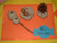
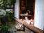

2002年11月23日 10時35分撮影
光るトナカイさんカチューシャをつけて。。。
カメラを向けると、こんな顔ばかりしてチョケています。2002年11月19日 20時16分撮影
最近はトイレも一人で大丈夫。
背が高くなったので、電気のスイッチも届くようになりました。
2002年11月16日 9時48分撮影
保育所の「作品展とふれあい広場」で、由起子の作品をパチリ。2002年10月14日 13時28分撮影
おうちから「甘樫の丘」までウォーキング。ちょっと疲れたけど、
丘からの眺めは綺麗でした。お弁当も美味しかったよ！2002年10月13日 8時46分撮影
良いお天気に恵まれた運動会。朝の行進では大きく腕を振って
元気いっぱいに歩いていた由起子です。2002年10月12日 14時37分撮影
お誕生日会をおばあちゃんちでしました。
大きなチョコレートケーキにローソクが４本【４歳】です！2002年10月7日 12時44分撮影
柳川から博多へ戻る途中「大宰府天満宮」へ立ち寄りました。
ユニークな橋と、その池にはたくさんの鯉が居ました。。。
2002年10月7日 10時33分撮影
柳川は、川下りと鰻のセイロ蒸しと、ここ「北原白秋」の生家が
有名です。ママは「柳川の感想」を綴っているところです。2002年10月6日 14時36分撮影
柳川下り：こんな雨の中で船に乗るのも、めったにないでしょう。
なかなか情緒があって、良かったです。雨には困ったけど！2002年10月5日撮影
結婚披露宴で「双眼鏡」のお歌を歌い、最後には「おにいちゃん、
おねえちゃん、おめでとう！」と、セリフまで言えました。